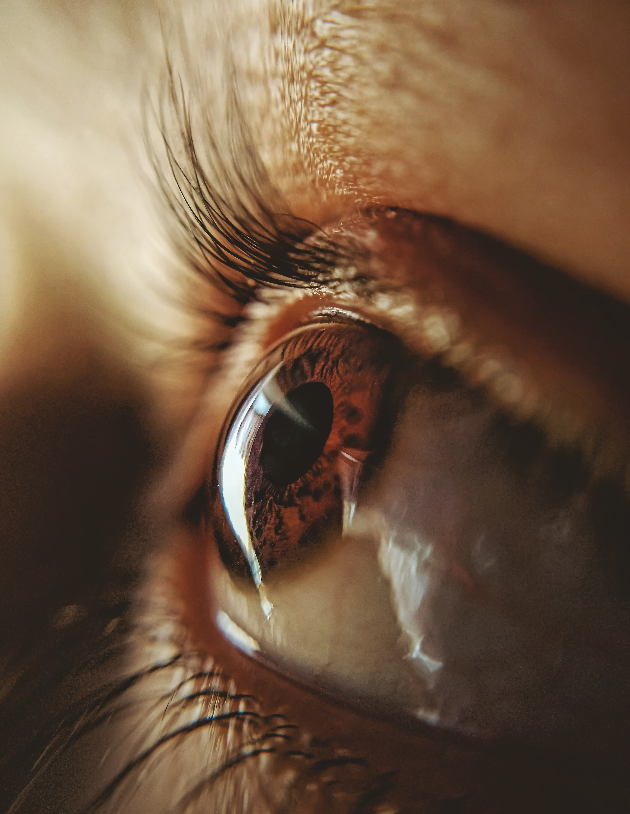

그녀가 울음을 삼키는 모습을 본 건 그때가 처음이었다. 전쟁에 대해 이야기할 때도 표정 하나 바꾸지 않고 담담하게 말했었기에 나는 아줌마 옆에서 어떤 표정을 지어야 할지 알지 못했다.

위태롭게나마 서로를 포기하지 않으려고 애쓰던 나의 부모와 상처받았기에 누구에게도 상처 주지 않으려 애쓰던 응웬 아줌마 부부가 서로에게 노래를 불러주던 시간이 거기에 있었다.
베트남 전쟁으로 가족을, 삶의 터전을 잃은, 슬픔이 가득찬 웃음이 행복인 응웬 아줌마는 그럼에도 불구하고 상처주지 않으려고, 사랑하려고 노력했다. 세상이 바라봐주지 못한 ‘나’의 엄마를 애정 어린 시선으로 바라보고, 혹여나 ‘나’가 상처를 입었을까 자신의 상처를 감추었다.